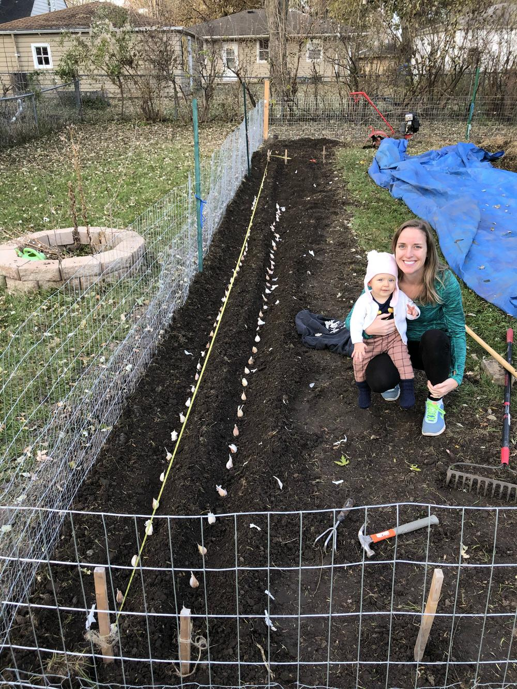

This year my wife and I planted ~100 cloves of garlic on Nov. 9, 2019. 75% of it came from Grade A Gardens, a local organic farm, and the remaining organic garlic was bought at Trade Joes. We've planted garlic in the past, but only in our raised beds. This is the most we've planted by a significant margin. Given that we've planted so many, we'll need to learn how to cure the garlic when it's harvested in the summer so it'll have a longer shelf life. The purpose of this content is for our documentation own purposes and maybe someone else will find it useful.
The ideal plan was to plant the cloves 6 inches apart in either direction and at depth where the top of the clove was 2 inches deep. If a clove is 2 inches tall then we need a 4 inch hole or trench. We planted two rows. I wanted to dig both rows at the same time to prevent the second row from disturbing the first row. Digging two 4 inch trenches 6 inches apart proved to be difficult. The dirt from the second trench just toppled over into the first trench. I ended up spacing the rows 12 inches apart to allow the dirt to pile high enough in between and on the sides and not fall into the adjacent trench.
I was disappointed that I couldn't use my space more efficiently. Next year, I think I'll get an auger that can be attached to a drill and just drill each hole for each clove. They are less than $20 online and would allow me to plant twice as much garlic in a given space compared to this years method. The $20 would pay for itself quickly and could also be used for other crops.
